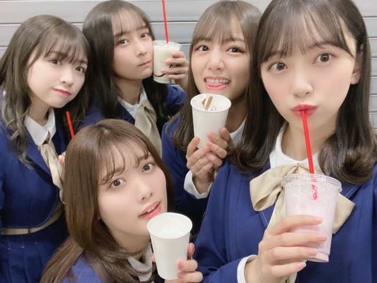

2019/1217Tueもうクリスマスは終わったと思っていましたがこれからなんですね
こんばんは〜
明治エッセルスーパーカップsweets アフォガート
のCMに出させていただいています☺︎
甘くて苦い味が癖になるので
ちょっとした休憩や、食後、お風呂上がりにぴったりです！ぜひぜひ


最近身体が重くて、
炭水化物を減らして
簡単ダイエットを始めました☺︎
身体のために頑張ります！
最近あったほっこり話し。
一人でご飯屋さんに行って、注文しようと
すみませんと言ったのですが声が通らず困っていたら
近くのテーブルの方が呼び出しボタンを押して
お水を頼んでくださり
それで、あ。呼び出しボタンがあるんだ！と知って
無事解決したのですが、たまたまだったとしても
困っていたあのタイミングでお水を頼んでくださったことで凄く助かりまして...
そんな優しさに触れてなにも言わずにはいられなくて、
帰り際にありがとうございましたとだけお伝えさせていただきました！
他人だからとか目立ちたくないとかお節介かもって思うんじゃなくて、自分がされて嬉しいことは積極的にやっていかなくちゃですね☺︎

いつめん❤︎
ダンスが上手くてライブだとめちゃくちゃかっこいいけど普段はよくふざけていて変で面白くてツボなみり愛
顔がとにかく整っていて私のことを1番に理解してくれる優しさもありながら突然謎のタイミングではっちゃけだす絢音
犬みたいに元気で楽屋でもずっと何かしら話しているお喋り好きだけど話を聞いてくれたり頼れたり、なにかと信頼してる日奈子
的確なアドバイスをいつもしてくれるし何でも笑ってくれて歳下だけど初期からずっと甘えさせてくれる純奈
気づいたらいつも一緒で、落ち着きます☺︎
たくさん思い出作りたいなぁ好きだなぁ

田中みな実さんと新木優子さんの写真集を、書店に買いに行きました〜
嬉しい〜
尊敬する美しいお2人...
女子力高めて寝ます...
では！おやすみなさい。
2019/12/17 20:18


コメント(307)
これからも頑張ってください！！
お友達の弘中アナに紹介してもらえば直接ありがたいお話が聞けるかも。
女子力の高さもそうだけど、あの人トークの技を心得てるのが尊敬できますね。
私も見習って明日からダイエットします。。。
2期生、いいね！！
ほっこりするわ～☺️
クリスマス、何にもないけどこれからだね！！
おやすみー
堀ちゃんほど乃木坂で女子力高い人いないんじゃない〜？
二期生メンバーの愛が強くて嬉しいな
これからも二期生との写真いっぱい見たいです！！
あと、まなったんとの写真も久しぶりに見たいなぁ〜
スーパーカップお風呂上がりに食べてみるね！
ダイエットするのはいいけど、健康管理もしっかりしてね、くれぐれも体調は崩さないようにお願いします。
今週の大阪全握行くので、りょーやって覚えておいてくれたら嬉しいです！
大好きです
唐突なんだけれど、チャイボーグメイをしているみおちゃんをぜひ見てみたいです。
お顔が整ってるからきっと似合うだろうなってずっと思ってたんだ〜。
「鹿の間」さんっていうYouTuberがメイク法を紹介していてすごく素敵だから、時間があるときにぜひみおちゃんにも観てみてほしい！
私も、綺麗なみおちゃんを見て女子力高めます☽
おやすみなさい〜
ブログ更新ありがとうございます！
先日の世界旅の時に｢バイクの免許を取りたい｣と話されていたので、誠に失礼ながら僕のおすすめバイクをお伝えさせていただきます。
おすすめはSUZUKIのGSX250Rというバイクです。
まず乗車姿勢が他の250ccのスポーツバイクに比べると楽で足つきも良いため女性に人気です！
また燃費も良く、1回の給油で500km走れてコスパがいいです！
あと外せないのが外装がシュッとしててカッコイイ所です
まだまだおすすめポイントは尽きませんが残りは握手会の時にお話できると嬉しいです！
年末もお忙しいと思いますが、頑張ってください！
優しいその方ももちろんですが、その優しさに気付けるのも未央奈さんが優しい人だからだと思います。
そうやってみんなが優しい人になれたら素晴らしいですね(^_^)
乃木撮2見ました‼︎ やっぱり二期生最高
いつも元気をありがとうございます
もう細いのにまだまだ体重管理を怠らないところがさすがやわーー
ほっこり話めっちゃいい話すぎるーー
そういう人が増えるといいなーー
いつめんのいい所を見つけれる未央奈も同じぐらいすごい人やと思う
大阪全握で会えるのめっちゃ楽しみにしとるーー
これからもずっと応援しとるよーー
これからもよろしくだよ！！！
大好きや！！
地方からの苦労を分かち合った絢音ちゃん
人懐っこいけど意外としっかり者の日奈子
同姓や年上関係なく包み込む純奈
まいちゅん、らんぜ、琴子、れなち、かりんちゃんに、伊織、そして未央奈。
全然性格の違う皆だけど、乃木坂の初期の苦労も葛藤も、喜びも全部受け入れてる二期生、良いよね。
世界旅見ました！！
そして、深い話をしているのを見て、自分も頑張ろうと思いました！
スーパーカップ絶対食べます笑
さり気ない優しさって大事だなって思いますね
これからも頑張ってね！
困っている人を見かけても、声を掛けれずにいます。これからは、声を掛けます。
スーパーカップ絶対買いますね。
2期生みんな、最高です。
応援し続けます。
二期生の個性ってそれぞれクセがスゴいんじゃ❗(いい意味でです。)
素直に『ありがとう。』って言えるのって良いですよね。
最後に、未央奈ポーズ『ありがとう。』
次回のブログ楽しみです❗
いつメン最高だね
みんなの良いところいっぱい言える仲っていいね
未央奈ちゃんかわいい写真多すぎや
迷う（勝手にしろやね笑）
でも本当にいつも元気貰ってます。
お仕事等、無理せず、ぼちぼち頑張ってください
おやすみなさい⭐
可愛すぎ
大阪全握行くよ
乃木坂世界旅見たよ！
きぃちゃんとのペアは本当に最高で最強だった！
プライベートの様子とか見れて本当に楽しい2日間でした
ありがとう！
2期生のイツメンは最強やな！
体調管理に気をつけてこれからも頑張ってね！
またね！
世界旅面白くて感動したよ！！！
2期生のみんな好きです！！
使わない和食中心の食事と間食は
カステラやどら焼きなど油を使わない
ものをとることです。
炭水化物抜いたら力が出ませんし、逆効果です。
間食を上記2つのものと昼食にうどんか
そばばかり食べてたら
10日ぐらいで2㎏やせました。
ダイエット目的ではなく自然とそうなりました。
なので今無理やり食べて体重戻しています。
昼食におにぎりばかり食べてもかなり効果があります。
終わったと思っていた
堀未央奈さんブログ更新
ありがとう⁉︎
堀サンタさんまだ終わってませんよ
これから可愛い堀サンタさんなるんだからね
堀サンタさん待ってます⁉︎
明治エッセルスーパーカップsweets アフォガート
CMもアイスもチェックするね⁉︎
楽しみ〜〜⁉︎(^^)
そしてダイエット
俺も頑張るよ〜⁉︎
写真集といえば
今、乃木撮2見てるよ
シュールな未央奈ちゃんや
可愛い未央奈ちゃんも
いて楽しい〜〜(^^)
スーパーカップ食べてみるね(*^^*)
写真めっちゃ可愛い！
見惚れるよ(〃^ー^〃)
ほっこり♪
自分がやられて嫌なことはやらず、して貰って嬉しいことはする
隣人愛d(⌒ー⌒)!
イツメン和む(*^^*ゞ
明日も未央奈さんにHAPPYを
お休みなさい(^-^ゞ
いつめん最高やんな、これからも頑張ってほしい！
大阪全握行くからよろしく〜！
日本っていい国よね！たまにある人の優しさが結構染みる
でも世界旅でいってたニューカレドニアの人も見た感じなかなか優しそうな人多そうやったな〜！！村長さん？とか笑笑
田中みな実さんと新木優子さんは綺麗すぎるよな〜努力とかも人の何倍もやってるんだろな〜
まあ、未央奈ちゃんも努力乃木坂1してるのファンは知ってるよ〜！！
年々綺麗かつ大人になってるのは明らかやしな〜
12月は忙しそうやけど、ゆっくり休んでも欲しいな！！
良いお年を〜！！！！！
未央奈ちゃんも体調管理しっかりしてね。このは、特に風邪やインフルエンザ等に気をつけてね。
おやすみなさい。
クリスマス沢山楽しもうね～♪
スーパーカップCM魅惑的ですよー！！
みおたんが食べてると更に美味しそうです✨
炭水化物食べ過ぎるとぽっこりしますねー！
あとは間食しないと結構効果がありますよ◎
自分も飲食店等で声が通らなくて困ります！
メンバーやファンの温かさも身に染みます☆
プリン会と塩アイスは甘辛ほっこりですね！
いつめんへの理解度で愛が伝わってきます✌
美しい方々の写真集で勉強してるのですね！
みおたんの女子力と優しさも素晴らしいよ♡
今回のお写真達も優しくて癒されました～☺
チャァオ～～!☆彡
美しい～⤴️⤴️⤴️
プリンセスみおちゃん、こんばんは～～⤴️⤴️❕❤️❤️❤️❤️❤️笑顔
12月忙しい～のに、ブログ更新ありがとうございます❕❤️❤️❤️❤️❤️笑顔
みおちゃん❕笑顔・・・
おいら、2期生の皆さんがめちゃめちゃ大好きだから～～⤴️⤴️
皆さんの元気な姿が見れて嬉しい～～⤴️⤴️⤴️です❕❤️❤️❤️❤️❤️笑顔
みおちゃん、ありがとぉ～～⤴️⤴️❕❤️❤️❤️❤️❤️笑顔
頑張ってねぇ❕❤️❤️❤️❤️❤️笑顔
(*^▽^)/★*☆♪❤️❤️❤️
(おいら、ひたすら大人しくしているから隅っこでいいから～2期生会に出たいよぉ～～❕❤️❤️❤️笑顔)
☆大人しい、おすまし！より☆彡
積極的にそーいうことが出来る人は素敵ですね！
モバメ、ブログの更新ありがとう。
何か、スッキリした感じが、メチャかわいい。♥♥
2期生、5人で仲良く楽しそうですね。
未央奈の努力、報われてますよ。
いつも、お写真をありがとう。❗❗
感謝の気持ちを素直に伝えている未央奈ちゃんすごいと思います！見習いたいです！
21日の全国握手会行けなくなりました泣
けど、乃木撮や歌番組で未央奈ちゃんが見れるので安心です
寒いので体調崩さないようにしてください！応援してます！
さりげない優しさって素敵よね、、（ ; ; ）
二期生相変わらず仲良しで微笑ましい！！
おやすみなさい
れに
今年も残り僅か！(゜ρ゜)
やり残しの無いよう楽しもう( ≧∀≦)ノ
可愛いな～(ﾟ∀ﾟ )いつもブログの写真に見とれてます
そうそう先週、パン屋でパン買ったら、帰り際に
キャベツ２玉を貰ってしまった！
今日もキャベツ有りまさすよって！
流石に一人で数日で２玉は食べきれないよ～(ノ∀≦。)ノ
この後、料理しますけどね！ヾ(･ω･ヾ)
体調に気を付けて
んじゃね～！Σ⊂(ﾟДﾟ )
急がなきゃ夜勤だし！Σ(ﾟДﾟ)
更新ありがとう^ ^ 黒髪めっちゃ似合ってるわー
何でも似合う(o^^o)
cmみたで〜 みんなかわいい❤️
紅白絶対見るよー
がんばってね！
未央奈さんいつもありがとう╰(*´︶`*)╯♡
アイス買って食べますね！
またコメントします！
さっき乃木撮2買ってきました！！
勉強の間にみて、元気もらいます！
これからも大好きです！！
いつも可愛い未央奈さんが好きです！
コメントする